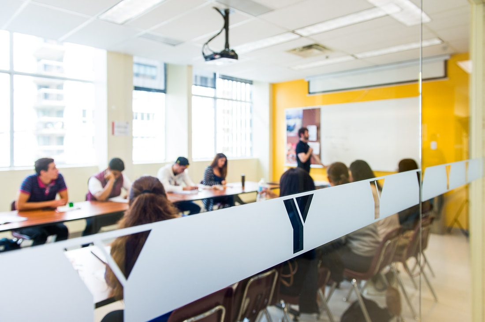
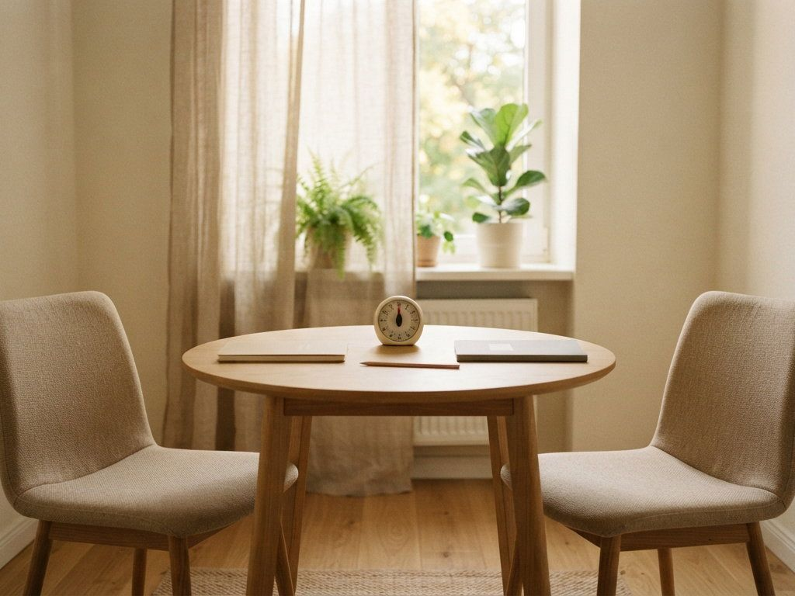

GESE and ISE
Spoken exam (GESE) and integrated skills exam (ISE), level by level. Recognised in the world of schools and training. We are an authorised exam centre.
Pathways built on the real exam format, with simulations, automatic assessment and reasoned error analysis. Choose your course, enrol online, access the platform.
For each course you will find the total hours. Every pathway includes access to the ADL platform and the digital course materials. The 5-day courses (30 hours) eligible for Erasmus+ funding are collected on the International courses page.
Press “Enrol” on the course you have chosen and send the request: you will receive confirmation and, for 5-day courses, information on Erasmus+ funding.
Ten minutes to understand where you are starting from. The pathway adapts to your real level.
Modules, exercises with immediate feedback and complete simulations under exam conditions.
Take the exam at our premises. The certificate comes from the official body.

Classroom lessonsIn-person classes follow the same methodological framework as the online pathways: stated objectives, guided practice, assessment and feedback. The channel changes, not the standard.
Contained classes to guarantee speaking time for every student.
Specific preparation on the format of the exam you need to take.
Every classroom course includes access to ADL so you can practise between lessons.
Bright classrooms, pair-work corners for speaking practice and a reference library: the rooms where language-course work takes place, on site and connected to the virtual classroom.

Spoken exam (GESE) and integrated skills exam (ISE), level by level. Recognised in the world of schools and training. We are an authorised exam centre.
TOEFL iBT for admission to Italian and foreign universities; TOEIC as the standard required by companies for professional English.
Certification of Italian as a second language: useful for residence permits, university and work.
At the end of every course you receive a certificate stating the level reached and the hours completed, useful for CVs and public competitions.
It depends on your starting level and your objective. On average, those who study 30–40 minutes a day arrive prepared in 2–3 months. There are no deadlines: you can go at your own pace, stop and pick up again.
Both. Online courses take place in a virtual classroom with a teacher and on the ADL platform; in-person courses are held at our premises. Many pathways are blended.
The 5-day courses (30 hours) are designed to be funded through the Erasmus+ budget grant for mobility training: the cost is based on that contribution. They run in spring, summer and autumn and start only once the minimum number of 6 participants is reached. After your request, the office confirms availability, provides the documentation for the application and the certificate of attendance for reporting. For the other courses, indicated with their number of hours, the office communicates the arrangements and amount after your request. For schools, an invoice with split payment can be issued.
Yes. For groups of at least six participants we prepare a dedicated quote, with an agreed schedule and progress reports for the referring teacher. Write from the Contact page stating the institute and number of participants.
You may withdraw within 14 days of purchase if you have not yet accessed the course content. The full conditions are set out in the enrolment contract sent by the office.
Take the entry test on the platform: in ten minutes you will know exactly where you are starting from and how far you have to go.